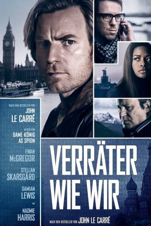

gesehen am 03.11.2016
gesehen am 03.11.2016Alternativ: Our Kind of Traitor gesehen am 03.11.2016
 
 IMDB-Wertung: 6.2 / 10
IMDB-Wertung: 6.2 / 10  Metascore:
Metascore: 
Der Oxford-Dozent Perry verbringt mit seiner Frau, der Anwältin Gail, einen romantischen Urlaub unter Palmen in Marrakesch. Dort lernen die beiden den zwielichtigen Russen Dima kennen. Nach einer wilden Party offenbart Dima seinem neuen Freund Perry ein ernsthaftes Problem: Als Geldwäscher der russischen Mafia trachten ihm Killer nach dem Leben. Dima will nach England überlaufen – und der unauffällige Perry ist dafür die perfekte Tarnung. Als der britische Geheimagent Hector auf den Plan tritt, geraten Gail und Perry zwischen die Fronten – und in eine Hetzjagd über Paris und London bis in die Schweizer Alpen, bei der am Ende niemand mehr dem anderen trauen kann.
Jahr: 2016
Dauer: 107 Minuten
FSK:
Land: England Studio: StudioCanalTonspuren: DD2.0 - ,
Untertitel: Deutsch,
Auflösung: 1080p (1920x808) Größe: 7987 MB
Regisseur: Susanna White
Drehbuch: Graham Greene
Soundtrack:
Darsteller:
 Stellan Skarsgård als Dima
Stellan Skarsgård als Dima Grigoriy Dobrygin als The Prince
Grigoriy Dobrygin als The Prince Velibor Topic als Emilio Del Oro
Velibor Topic als Emilio Del Oro Ewan McGregor als Perry
Ewan McGregor als Perry Naomie Harris als Gail Perkins
Naomie Harris als Gail Perkins Alec Utgoff als Niki
Alec Utgoff als Niki Marek Oravec als Andrei
Marek Oravec als Andrei Saskia Reeves als Tamara
Saskia Reeves als Tamara Alicia von Rittberg als Natasha
Alicia von Rittberg als Natasha Damian Lewis als Hector
Damian Lewis als Hector Khalid Abdalla als Luke
Khalid Abdalla als Luke Mark Stanley als Ollie
Mark Stanley als Ollie Mark Gatiss als Billy Matlock
Mark Gatiss als Billy Matlock Katia Elizarova als The Prince's Girlfriend - Katia
Katia Elizarova als The Prince's Girlfriend - Katia Jeremy Northam als Aubrey Longrigg
Jeremy Northam als Aubrey Longrigg Christian Brassington als Secretary to the Cabinet
Christian Brassington als Secretary to the Cabinet Paul Biddiss als Close Protection Officer , uncredited
Paul Biddiss als Close Protection Officer , uncredited Erick Hayden als Prince's Lawyer , uncredited
Erick Hayden als Prince's Lawyer , uncredited Tyrone Love als Tennis player , uncredited
Tyrone Love als Tennis player , uncredited Hugh O'Brien als Hotel Guest , uncredited
Hugh O'Brien als Hotel Guest , uncredited Osi Okerafor als Ryan , uncredited
Osi Okerafor als Ryan , uncredited Tina Simmons als MP - Member of Parliament , uncredited
Tina Simmons als MP - Member of Parliament , uncredited Radivoje Bukvic als Misha
Radivoje Bukvic als MishaDatei: X:\2016(N-Z)\Verräter wie wir (2016, FSK, 1920x808).mkv seit 31.10.2016
Festplatte: HD 2016(A-Z)
 Es gibt insgesamt 182 Filme in der Gruppe '2016(N-Z)'
Es gibt insgesamt 182 Filme in der Gruppe '2016(N-Z)'